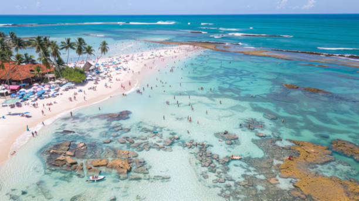
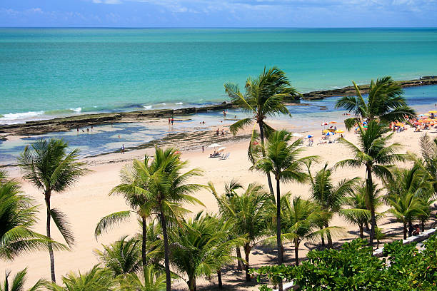

Porto de Galinhas é uma praia localizada no distrito homônimo, pertencente ao município de Ipojuca, no estado de Pernambuco, Brasil. A região possui piscinas de águas claras e mornas formadas entre corais, além de estuários, mangues, areia branca e coqueirais.

Porto-de-galinhas-PE
Praia de Boa Viagem
A Praia de Boa Viagem é a praia urbana mais famosa da cidade do Recife, capital do estado brasileiro de Pernambuco. Com aproximadamente oito quilômetros de extensão, está situada no bairro homônimo, Zona Sul da capital pernambucana, delimitada pela Praia do Pina ao norte e pela Praia de Piedade ao sul.

Praia de Boa Viagem
Teatro Santa Isabel
O Teatro de Santa Isabel é um teatro localizado na cidade brasileira do Recife, capital do estado de Pernambuco. É um raro exemplo de genuína arquitetura neoclássica da primeira metade do século XIX brasileiro. Foi nomeado em homenagem à Princesa Isabel.